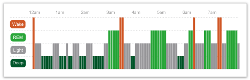

Capable of monitoring brain-waves, the Zeo is designed to help you analyze and improve your sleep. It’s composed of a lightweight wireless headband, a bedside display, a set of online analytical tools, and an email-based personalized coaching program.
Your ZQ is a daily sleep quality rating. The ZQ formula is based on extensive scientific testing, and takes into account a variety of factors including how long and how deeply you've slept. If you can measure it, you can improve it.
Using Zeo’s included web-based tools, you can easily see exactly how — or whether — you slept through the night.
Understand and minimize the factors that negatively affect sleep, so you can take control of your nights. Use the visual analytical tools in your personal myZeo.com account to see trends and cause & effect patterns.
Sign up for the 7 Step Sleep Fitness™ Program to receive recommendations and actions plans tailored to you and your sleep. Zeo will help you get the most from your sleep, so you can be your best.